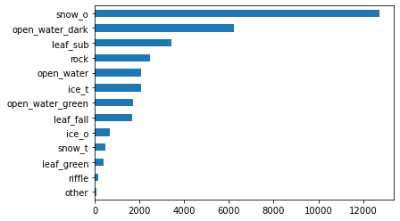

Chapter 1 Random Forest Image Classification
The last step in the data pipeline is to run a random forest model to classify images.
The script for running the machine learning model is ml_model_final.ipynb (hosted in Jupyter Notebook).
1.1 Introduction to Random Forest
Our machine learning model used a random forest model, which is a type of ensemble learning method for classification. It works by taking a set number of decision trees all operating independently, and outputting the result selected by the largest number of trees.
We chose a RF model for machine learning because it typically does a better job of not overfitting. This was important for our study at Hubbard Brook, because our images contained a large class imbalance. See the image below for an example class distribution (opaque snow and dark open water were far more prevalent than riffles/green leaves at this location).

Other benefits of the random forest model are that it easily provides variable/feature importance, which is useful when evaluating the moderl’s performance. Additionally, we have tried an unsupervised learning approach with a convolutional neural network (CNN), which did not perform well on images with both leaves and ice.
1.2 Using the Script
1.2.1 Data Preparation
First, load in all necessary packages.
import pandas as pd
import matplotlib.pyplot as plt
import numpy as np
import seaborn as sns
from sklearn.model_selection import train_test_split, RandomizedSearchCV,GridSearchCV
from sklearn.ensemble import RandomForestClassifier
from sklearn.metrics import classification_report,confusion_matrix, accuracy_score
from sklearn.metrics import ConfusionMatrixDisplay
import os
%matplotlib inline
from PIL import Image
import warnings
warnings.filterwarnings("ignore")The first step is to wrangle the data so it can be fed into the model. Read in your .csv files and run all the code chunks
The below code chunk contains the functions for data wrangling which create data and temperature columns for the dataframe, as well as sampling from each class.
def wrangle_data(df):
'''
Create date and temperature columns for dataframes
'''
# remove duplicate RGB
df = df.drop_duplicates()
df["date"] = pd.to_datetime(df["date"])
df["temperature"] = df.temperature.apply(lambda a: float(a[:-1]) if type(a) != float else np.nan)
return df
def pick_samples(df):
'''
pick samples from each class with defined max class size
'''
sampled_df = df.head(1)
max_class_size = 100
for date in df.orig_name.unique():
date_grouped = df[df.orig_name==date]
nth = len(date_grouped)//max_class_size
if nth==0:
sampled_df = pd.concat([sampled_df,date_grouped])
else:
curr_group = date_grouped.iloc[::nth,:]
sampled_df = pd.concat([sampled_df,curr_group])
sampled_df.drop_duplicates(inplace=True)
return sampled_dfAfter the data wrangling is complete, the notebook first runs the model - the low accuracy will be corrected through the next step of hyperparameter tuning.
1.2.2 Hyperparameter Tuning
Hyperparameter tuning is the process which helps select the optimal model architecture. For instance, one such question is: how many trees should I include in my random forest?
We used two tuning methods, grid search and random search. - Grid search builds a model for each one of the possible hyperparameter values, and selects the model with the best results. - Random search defines distributions for the hyperparameters, and not all values are tested - values tested are selected at random.
1.2.3 Training Random Forest Model
Advance to the section titled Train Random Forest Model. The first section creates the functions for training the model. It splits the dataset into training and test sets and then fits the model. The second function plots the confusion matrix displaying the model’s accuracy.
def split_fit_basic_report(df):
"""
Split dataset into training and test, fit model using default RCF parameters
return model, prediction, feature_importances, X_train, X_test, y_train, y_test
"""
X = df.drop('class',axis=1)
y = df['class']
X_train, X_test, y_train, y_test = train_test_split(X, y, test_size=0.30, random_state=1, stratify=y)
rfc = RandomForestClassifier(random_state = 1)
rfc.fit(X_train, y_train)
# predict on test data
rfc_pred = rfc.predict(X_test)
print(classification_report(y_test,rfc_pred))
feature_val = pd.DataFrame(rfc.feature_importances_, index = X_train.columns)
print(feature_val.sort_values(0, ascending=False))
return rfc, rfc_pred,feature_val, X_train, X_test, y_train, y_test
def plot_cm(y_test, rfc_pred):
"""
plot confusion matrix of model predictions
"""
p,ax = plt.subplots(figsize=(30, 20))
ConfusionMatrixDisplay.from_predictions(y_test, rfc_pred, ax=ax, colorbar=True)
plt.show()Run the subsequent code chunks to use grid search CV and random search CV to select the best estimators for the model. After this is done, we then test the model on unseen data which is not used for training/testing.
1.2.4 Generating Reclassified Images
The last section in the workbook is how we visualize the results of our model. We use the model to generate a reclassified image containing pixel predictions for the region of interest. The first section is a dictionary mapping each attribute to the color it will appear in the image, which can be tweaked based on personal preference.
li = ['x', 'y', 'R', 'G', 'B', 'temperature', 'year', 'week', 'month',
'season_autumn', 'season_spring', 'season_winter']
def display_predict_img(file):
img= np.asarray(Image.open("invert_"+file))
img_cp = img.copy()
ind =np.where((img[:,:,0]!=0) & (img[:,:,1]!=0) & (img[:,:,2]!=0))
y_vals = ind[0]
x_vals = ind[1]
_= img[y_vals,x_vals,:]
r_vals, g_vals, b_vals = _[:,0], _[:,1], _[:,2]
fl = merged[merged.orig_name==file][li].head(1)
point = pd.DataFrame({'x': x_vals,
'y': y_vals,
'R': r_vals,
'G': g_vals,
'B': b_vals,
})
point['temperature']= fl.temperature.values[0]
point['year']= fl.year.values[0]
point['week']= fl.week.values[0]
point['month']= fl.month.values[0]
point['season_autumn']= fl.season_autumn.values[0]
point['season_spring']= fl.season_spring.values[0]
point['season_winter']= fl.season_winter.values[0]
pr = model.predict(point)
point["pred_class"] = pr
def apply_change(row):
pred = row["pred_class"]
newR, newG, newB=colors[class_rgb[pred]]
img_cp[row.y,row.x,:] = [newR, newG,newB]
point.apply(lambda x: apply_change(x), axis=1)
f, ax = plt.subplots(1,2)
ax[0].imshow(img)
ax[1].imshow(img_cp)
f.set_figheight(15)
f.set_figwidth(15)
return img, img_cp, pointThis function uses the model output to re-map the image. Below are some outputs generated by the model. The first image shows the model does an excellent job distinguishing between snow and water, practically mapping out the original image exactly. The second image is a bit more ambiguous with a mixture of submerged leaves, ice, and rock, but the model is still able to predict them fairly accurately.


1.3 Future Improvements
While our model achieved a high accuracy and recall of 96% for our images, there are still areas for fine-tuning and improvement. For one, the model was occasionally less accurate when attempting to differentiate between water and leaves/rocks in the stream channel, as well as other classes less prevalent in the training set. This is the case in the image here:

Thus, in the future, exposing the model to more training data with these classes can improve its accuracy. Additionally, the model can be expanded to differentiate between different types of ice, which can be of use to researchers studying ice jams - this is just one of many potential changes.